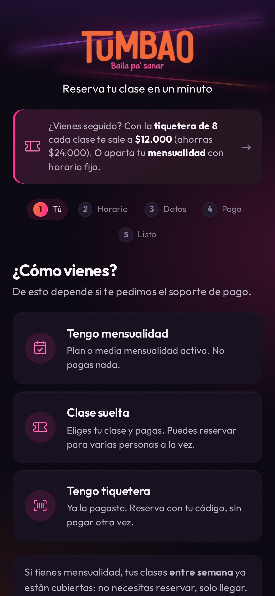
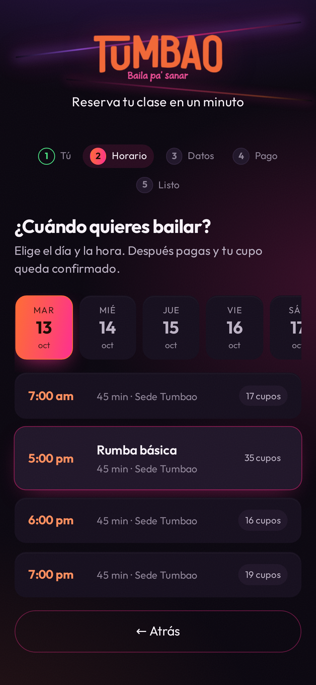
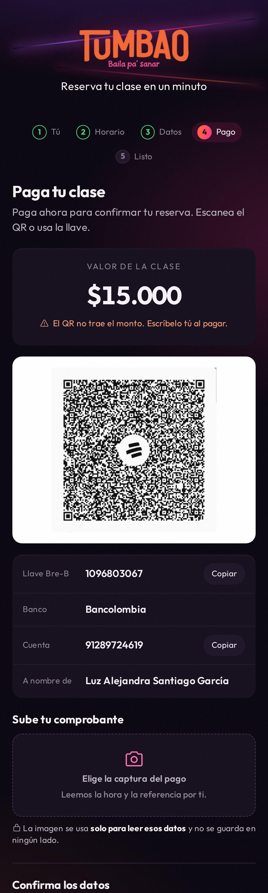
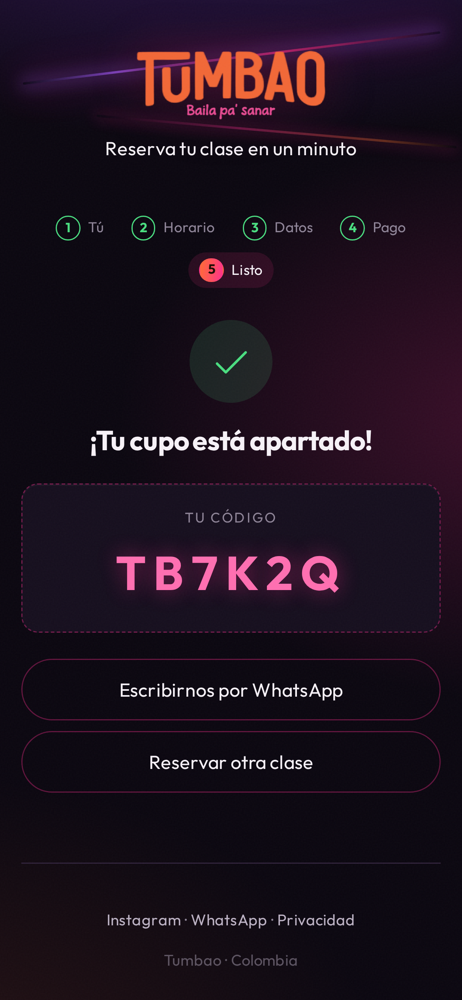
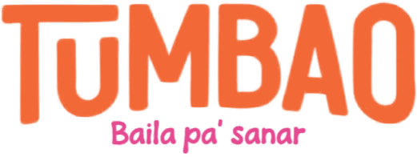

Cuando dejas de
Inventar excusas
Tu clase
Te espera
Resérvala en
un minuto
1
2
3
Reserva
Paga
Listo
Escoge el día y la hora
Con QR o llave Bre-B
Tu cupo queda apartado




No te quedes sin tu cupo
Reserva hoy

tumbaobaila.com